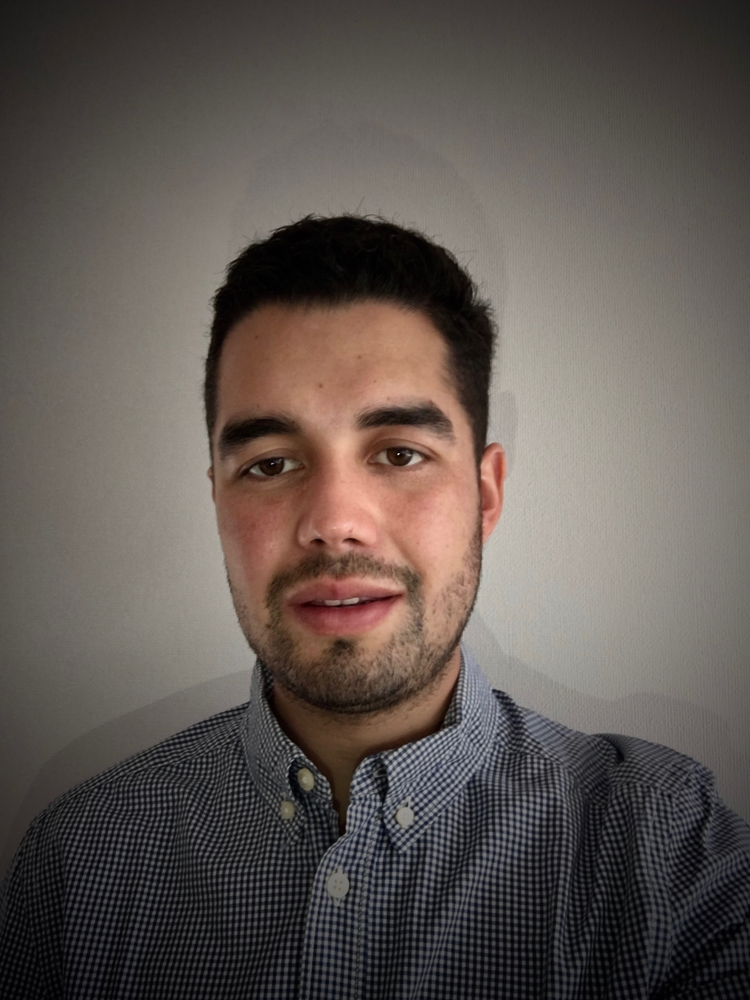

Matias Lemus
 |
Ing Agronomo
Habilidades
- Proactivo
- Innovación
- Hobbies
Redes Sociales
- Linkeding
- E-mail: mjlemus@uc.cl
- Telefono: +56 9 7450 8869
Experiencia Laboral
- 2018 - Actualidad: Administrativo-Analista de Datos. CyD
Asesorías.
Funciones: Implementación de reportes financieros en el sector agrícola, plataforma
Power BI. Análisis de Datos de clientes para la toma de decisión. Coordinador de
Oficina Administrativa.
Logros: Creación de instrumentos de supervisión de actividades agrícolas y control
financiero en plataforma Power BI. Automatización de procesos internos.
- Octubre 2017- enero 2018: Asistente de Agrónomo de Productores.
Ranco Cherries.
Funciones: Agrónomo de terreno, a cargo de control de calidad de envió de fruta.
Estimación de flujo diario y semanal.
Logros: Creación de reporte de calidad internó, toma de decisión en campo para
envío de fruta.
- Mayo- septiembre 2017: Administración. Salmones Von Fach
Funciones: A cargo del área productiva y finanzas.
Logros: Reporte sobre el estado financiero de la empresa, establecer flujos
productivos, control de calidad de la producción, flujo logístico. Todas actividades
que no existían dentro de la empresa.
- o Octubre-diciembre 2016: Agro&ID, Pontificia Universidad Católica
Funciones: Asistente de investigación. Proyecto "Desarrollo de estrategias y/o
manejos productivos para mejorar la productividad y calidad de la fruta en cítricos
dulces". Proyecto ASOEX "Diseño de una estrategia para reducir la presencia de
semillas en mandarinas de exportación".
Logros: Optimización de tiempos en los procesos realizados.